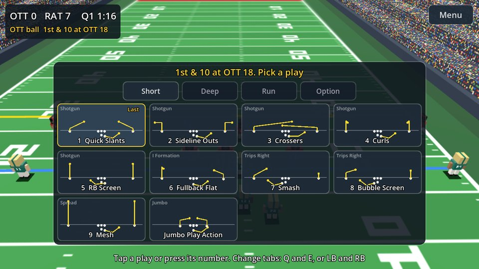

Tiny Titans Football
Arcade 7 on 7 and 11 on 11 football
Call a play, then run it. Throw to four receivers, juke past tacklers, pick a defense and chase down the ball. Four fictional teams, four 2-minute quarters and one loud stadium.
Version 0.1.0. Release notes · Backlog · Source on GitHub


What kind of game is this?
Call it, then run it. Pick from 8 offensive plays and 4 defenses. The snap hands you control.
Arcade pace. Big hits, fast players and quick downs. A full game takes about 10 minutes.
Real football rules. Four downs, first downs, touchdowns, field goals, punts, safeties and turnovers.
All original. Fictional teams and our own plays and art. No real leagues, teams or players.
Things to do
- Play a full exhibition game against the computer.
- Pick one of four teams: Ironwood Otters, Harbor City Comets, Red Mesa Rattlers or Summit Yetis.
- Throw Quick Slants, Go Deep, Sideline Outs and Crossers.
- Run the Inside Dive, Off Tackle and both Sweeps.
- Call Man Cover, Zone Cover, Blitz or Run Stuff on defense.
- Kick field goals and extra points with a timing meter.
- Use Practice mode to try every play with no clock and no score.
Controls
- Keyboard: WASD or arrows move. Space snaps and sprints. 1 to 4 pass. E juke. Q dive or tackle. Tab switch defender. Esc menu.
- Controller (Xbox layout): left stick or D-pad moves. A snaps. Each receiver shows A, B, X or Y: press that button to throw to him. RT sprints. B jukes. X dives or tackles. LB switches defender. The Menu button opens the Menu. In 0.1.0, press Start and pick plays with the mouse, touch or Enter. From 0.2.0 the controller does that too.
- Touch: drag on the left to move. Buttons on the right. Tap a receiver or a number button to pass.
Install on Android
- Tap Download for Android.
- Open the downloaded file.
- If Android asks, allow installs from this source.
- Tap Install, then open the game.
Android may show a Play Protect notice for apps from outside the Play Store. This first build is signed with a test key, so a later build may ask you to uninstall this one first.
Feedback wanted
- How running, passing and tackling feel
- Whether the camera sits at the right height and distance
- Whether the computer is too easy or too hard
- Any play that works every time
- Your phone model if you see lag